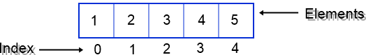
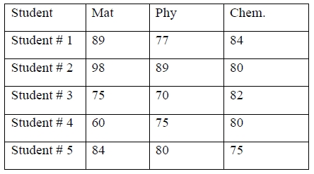
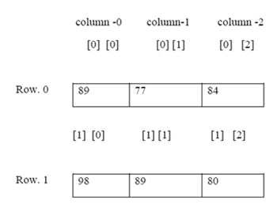
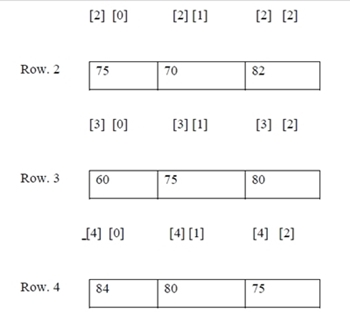

Arrays
The fundamental data types, namely char, int, float, double are used to store only one value at any given time.Hence these fundamental data types can handle limited amounts of data.
In some cases we need to handle large volume of data in terms of reading, processing
and printing.
To process such large amounts of data, we need a powerful data type that would facilitate efficient storing, accessing and manipulation of data items.
"C" supports a derived data type known as "array" that can be used for such applications.
Arrays:
An array is a fixed size sequenced collection of elements of the same data type.
It is simply grouping of like type data such as list of numbers, list of names etc.
Some examples where arrays can be used are
1) List of temperatures recorded every hour in a day, or a month, or a year.
2) List of employees in an organization.
3) List of products and their cost sold by a store.e.t.c.
Thus An array is collection of same data type elements in a single entity. Or An array is collection of homogeneous elements in a single variable.
It allocates sequential memory locations.
Individual values are called as elements.
Types of Arrays: We can use arrays to represent not only simple lists of values but also tables of data in two or three or more dimensions.
One - dimensional arrays
Two - dimensional arrays
Multi - dimensional arrays
ONE - DIMENSIONAL ARRAY: A list of items can be given one variable name using only one subscript and such a variable is called a single - subscripted variable or a one - dimensional array.
Declaration of One-Dimensional Arrays :
Like any other variables, arrays must be declared before they are used.
The general form of array declaration is
Syntax:
datatype array_name [sizeofarray];
The datatype specifies the type of element that will be contained in the array, such as int, float, or char.
The size indicates the maximum number of elements that can be stored inside the array.
The size of array should be a constant value.
Examples:
float height[50];
Declares the height to be an array containing 50 real elements. Any subscripts 0 to 49 are valid.
char name[10];
Declares the name as a character array (string) variable that can hold a maximum of 10 characters.
Initialization of One - Dimensional Arrays:
After an array is declared, its elements must be initialized. Otherwise they will contain "garbage".
An array can be initialized at either of the following stages.
(i) At compile time
(ii) At run time.
1)
Compile Time Initialization: We can initialize the elements of arrays in the same way as the ordinary variables when they are declared. The general form of initialization of array is datatype array_name[size] = { list of values }; The values in the list are separated by commas.
Example: int number[3] = {0,0,0};
i.e., we will declare the variable number as an array of size 3 and will assign zero to each element.
If the number of values in the list is less than the number of elements, then only that many elements will be initialized.
The remaining elements will be set to zero automatically.
Ex: float total[5] = { 0.0, 15.75, -10};
The size may be omitted.
In such cases, the compiler allocates enough space for all initialized elements.
Ex: int counter [ ] = {1,1,1,1};
This will declare the counter array to contain four elements with initial values 1.
Character arrays may be initialized in a similar manner.
char name[ ] = { "J", "o", "h", "n", "\0"};
This declares the name to be an array of five characters initialized with the string "John" ending with a null character.
Alternative declaration is char name[ ] = "John";
Compile time initialization may be partial. i.e., the number of initializers may be less than the declared size. In such cases the remaining elements are initialized to zero, if the array type is numeric.And NULL if the type is char.
Ex: int number[5] = {10,20};
Will initialize the first two elements to 10 & 20 respectively and the remaining elements to zero.
Similarly char city[5] = {"B"}; will initialize the first element to "B" and the remaining four to NULL.
If we have more initializers than the declared size, the compiler will produce an error.
int number[3] = {10,20,30,40}; will not work. It is illegal in C.
(2)
Run Time Initialization:
An array can be explicitly initialized at run time.
This approach is usually applied for initializing long arrays.
Ex:
for(i=0; i<100%; i++)
{
if (i<50)
sum [i] = 0.0;
else
sum [i]= 1.0;
}
-----------
Here the first 50 elements of the array "sum" are initialized to zero.
While remaining 50 elements are initialized to 1.0 at run time.
We can also use a read function such as "scanf" to initialize an array.
Ex: int x[3]; scanf(" %d %d %d ", &x[0], &x[1], &x[2]);
This will initialize array elements with the values entered through the key board.
Character arrays are called strings.
There is a slight difference between an integer array and a character array.
In character array NULL ("\0") character is automatically added at the end.
In other types of arrays no character is placed at the end.
Hence by using NULL character compiler detects the end of the character array.
Important
Array Indexing
Array index start at zero , and go to one less than the size of the array.
e.g
Consider an Array
a[5]={1,2,3,4,5};
The index position and element position of this array is as:

This is because in C the name of an array is a pointer, which is a reference to a memory location. Therefore, an expression *(arr + n) or arr[n] locates an element n-locations away from the starting location because the index is used as an offset.
TWO DIMENSIONAL ARRAYS: There could be situations where a table of values will have to be stored. Consider a student table with marks in 3 subjects.

We can think this table as a matrix consisting of 5 rows & 3 columns.
Each row represents marks of student # 1 in all (different) subjects.
Each column represents the subject wise marks of all students.
In mathematics we represent a particular value in a matrix by using two subscripts such as Vij.
Here V denotes the entire matrix Vij refers to the value in " i "th row and " j "th column.
EXAMPLE: In the above table V23 refers to the value "80".
C allows us to define such tables of items by using two-dimensional arrays.
Definition: A list of items can be given one variable name using two subscripts and such a variable is called a two - subscripted variable or a two - dimensional array.
Two - Dimensional arrays can be declared as.
datatype name[row size] [column size] ;
The above table can be defined in "C" as
int V[5][3]; Representation of two Dimensional array in memory.


Initializing Two- Dimensional Arrays:
Like the one-dimensional arrays, two-dimensional arrays may be initialized by
following their declaration with a list of initial values enclosed in braces.
int table[2] [3] = {0,0,0,1,1,1};
This initializes the elements of first row to zero and the second row to one.
This initialization is done row by row.
The above statement can be equivalently written as
int table[2][3] = {0,0,0},{1,1,1};
we can also initialize a two - dimensional array in the form of a matrix as shown.
int table[2][3] = {
{0,0,0},
{1,1,1}
};
Commas are required after each brace that closes of a row, except in case of last row.
If the values are missing in an initializer, they are automatically set to zero.
Ex:
int table [2] [3] = {
{1,1}, 1 1 0
{2} 2 0 0
};
This will initialize the first two elements of the first row to one,
The first element of the second row to two and all other elements to zero.
When all the elements are to be initialized to zero, the following short-cut method may be used.
int m[3][5] = { {0}, {0}, {0}};
The first element of each row is explicitly initialized to zero while the other elements are automatically initialized to zero.
The following statement will also achieve the same result
int m[3][5] = { 0, 0 };
MULTI DIMENSIONAL ARRAY: list of items can be given one variable name using more than two subscripts and such a variable is called Multi - dimensional array.
Three Dimensional Array: A list of items can be given one variable name using three subscripts and such a variable is called Three - dimensional array.
Declaration of Three-Dimensional Arrays : Syntax:
type name[size1][size2]...[sizeN];;
The datatype specifies the type of elements that will be contained in the array, such as
int, float, or char.
Initializing Three- Dimensional Arrays:
Like the one-dimensional arrays, three-dimensional arrays may be initialized by
following their declaration with a list of initial values enclosed in braces.
int table[2][2][3] = {0,0,0,1,1,1,6,6,6,7,7,7};
This initializes the elements of first two dimensional(matrix) first row to zero"s and
the second row to one"s and second matrix elements are first row to six"s and the
second row to seven"s.
This initialization is done row by row.
The above statement can be equivalently written as
int table[2][3] = { {0,0,0} , {1,1,1} , {0,0,0} , {1,1,1}}
we can also initialize a two - dimensional array in the form of a matrix as shown.
int table[2][3] = {
{
{0,0,0},
{1,1,1}
},
{
{6,6,6},
{7,7,7}
}
} ;